GMV Amazon в 2025 69% — доля сторонних продавцов (было 60% в 2019)
$156 млрд
Amazon заработал на комиссиях (2024) = 25% всей выручки компании
20-33%
валовых продаж уходит на рекламу главный убийца маржи. EBITDA падала 4 года подряд
40-60%
совокупные расходы селлера от выручки чистая маржа: 5-15% (Amazon FBA)
INFORM Act
обязательная верификация продавцов первое дело — против Temu (сент. 2025)
Forbes, Ozon IR, Marketplace Pulse, Data Insight, Коммерсантъ, Momentum Works, Amazon, ФАС, PMK 37/2025 — всего 36 источников
доколе?
Creative Director
Илья Лопухов
Продал идей на миллиард и ни одного NFT
13 лет в рекламеБрендинг, стратегия, креатив30+ наград
Кто развивает бренд своих продуктов?
[ ● ● ● ]
Пайплайн: от стратегии до визуала
Этап 01
Стратегия
Ресёрч, анализ рынка, пирамида бренда, платформа
Этап 02
Нейминг
Креативные механики, компрессия смысла в слово
Этап 03
Айдентика
Референсы, мудборд, визуальная система бренда
[ ● ● ● ]
Пирамида бренда
Brand Essence
Суть бренда — одно предложение, которое определяет всё
Ценности
Во что верит бренд, его принципы и убеждения
Эмоциональные выгоды
Что человек чувствует при контакте с брендом
Функциональные выгоды
Конкретные преимущества продукта или услуги
Атрибуты
Осязаемые свойства: имя, цвет, шрифт, упаковка, звук
[ ● ● ● ]
Бренд-платформа
01
Миссия
Зачем мы существуем
02
Видение
Куда мы идём
03
Ценности
Во что мы верим
04
Позиционирование
Чем мы отличаемся
05
Характер
Какие мы
06
Tone of Voice
Как мы говорим
07
RTB — Reasons to Believe
Почему нам стоит верить
Поздравляю!
Теперь вы знаете, за что агентство брендинга возьмёт с вас от 30 до 60 тысяч долларов.
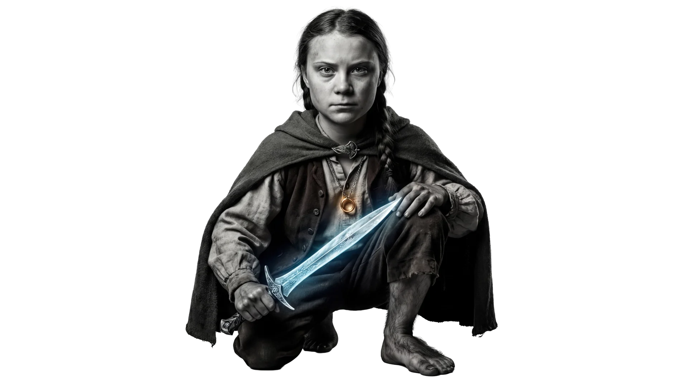
А зачем он нужен, этот ваш бренд?
Не про «выделиться на фоне конкурентов». И даже не про «влюбить в себя аудиторию».
Бренд — это про обладание.
Его не сможет отнять конкурент или маркетплейс. Бренд открывает другой маркетинг, который принадлежит только вам: контент, приложение и всё, что вы можете себе представить и навайбкодить. И трафик тоже будет только ваш.
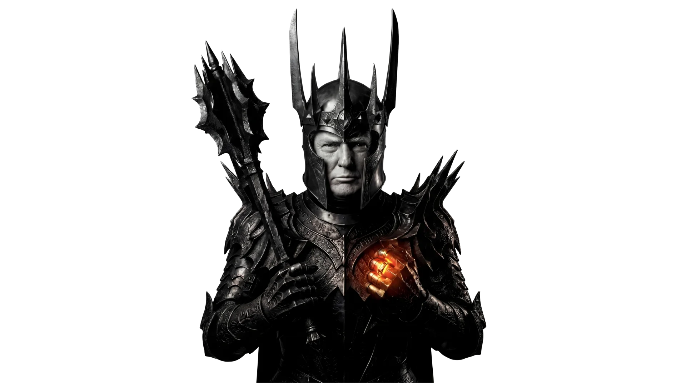
Итого: бренд — способ хеджировать риски и больше контролировать.
Как его построить не по цене крыла от истребителя?
Кто использует AI для автоматизации своих процессов?
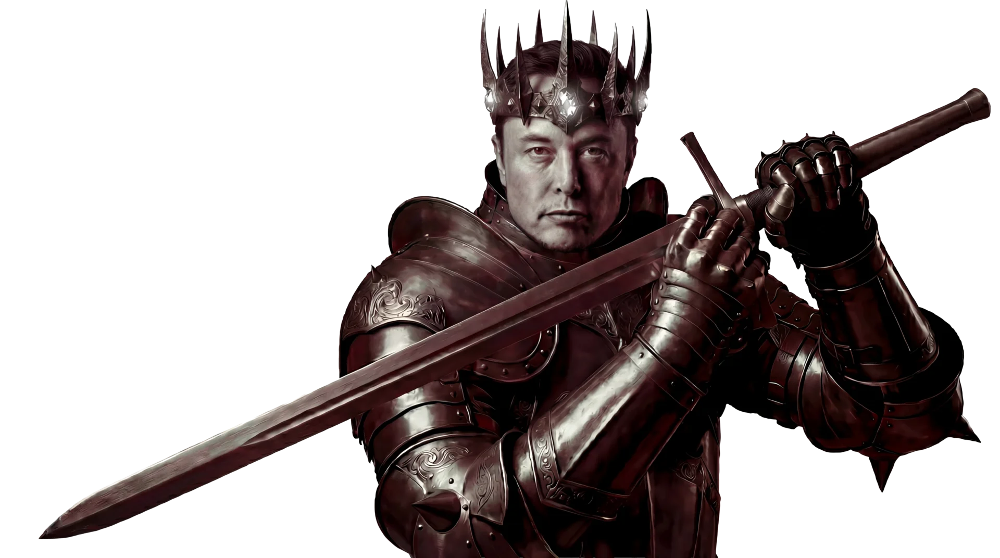
Кто доволен результатом?
Быстро и легко с AI можно сделать только полную хуйню.
А что если я вам скажу, что с AI стратегию, креативную идею, нейминг + айдентику можно сделать за 2–3 недели вместо 3 месяцев?
[ ● ● ● ]
Стратегия: AI-ресёрч
Не поиск, а диалог-расследование. Логика «четырёх касаний»
Claude Deep Research
Сам ищет в 30+ источниках, триангулирует, собирает отчёт. Первый слайд этой презы = один промт.
Perplexity Pro
Диалоговый поиск с уточняющими вопросами и ссылками на источники.
ChatGPT
Генерация гипотез и обработка больших объёмов текста.
Касание 01
Контекстуализация рынка (Market Deep Dive)
Глубокое погружение в рынок: визуальные тренды, ценности конкурентов, динамика категории. Цель — понять ландшафт, в который вы входите.
«Проанализируй рынок детских молочных продуктов в СНГ за 2025 год. Какие визуальные тренды доминируют? Какие ценности транслируют конкуренты Растишки?»
Касание 02
Исследование аудитории (Audience Insights)
Поиск реальных болей, страхов, барьеров аудитории. Не абстрактная «ЦА 25-35», а конкретные цитаты, обсуждения, фрустрации.
«Найди обсуждения мам на форумах и в соцсетях на тему: "Как приучить ребенка к обучению через игру". Какие главные страхи и барьеры они упоминают?»
Касание 03
Концептуальный поиск и метафоры (Creative Hooks)
Поиск неочевидных связей, метафор, культурных кодов. Материал для креативных зацепок — то, что потом станет идеей.
«Найди интересные факты о динозаврах, которые можно превратить в механику игры в Roblox...»
Касание 04
Фактчекинг и проверка гипотез
Верификация найденных данных, проверка на галлюцинации AI. Всё, что пойдёт в стратегию, должно быть подтверждено источниками.
«Существовали ли теории о связи динозавров и падения метеоритов, которые можно подать детям позитивно?»
Google = библиотекарь · Perplexity = аналитик · Claude Deep Research = стратег
8 промтов для ресёрча — работают в Perplexity и Claude
01 · Анализ рыночного контекста
«Проведи глубокий анализ рынка [категория продукта] в регионе [страна/город] за последние 2 года. Найди 3-5 самых успешных кейсов конкурентов, которые использовали [инструмент]. Выдели их ключевые визуальные и смысловые приемы.»
02 · Поиск «болей» и инсайтов
«Проанализируй форумы, отзывы и социальные сети, чтобы найти реальные цитаты и жалобы целевой аудитории [описание ЦА] относительно [проблема/категория]. Какие эмоциональные дефициты они испытывают? Что является решающим фактором при выборе [продукта]?»
03 · Метафорический поиск и культурный код
«Найди 5 неочевидных метафор или концепций из области [наука, история или искусство], которые связаны с [ценность бренда]. Как эти смыслы можно адаптировать для визуальной коммуникации бренда [название]?»
04 · Анализ трендов и инноваций
«Какие технологические и визуальные тренды будут доминировать в [индустрия] в 2026 году? Приведи примеры того, как бренды-лидеры уже внедряют эти инновации.»
05 · SWOT-анализ на стероидах
«На основе текущих новостей и отчетов за 2025-2026, составь SWOT-анализ для бренда [название] в контексте нового запуска [описание проекта]. Какие внешние угрозы со стороны конкурентов? Какие уникальные рыночные возможности сейчас открыты?»
06 · Проверка гипотезы на прочность
«У меня есть идея: [краткое описание]. Найди данные или аналогичные кейсы, которые подтверждают или опровергают эффективность такого подхода для аудитории [ЦА]. Какие могут быть этические или логические риски?»
07 · Визуальный ресёрч для AI-дизайнера
«Опиши подробно визуальный стиль, который считается "премиальным" и "современным" для категории [категория]. Какие цветовые палитры, типы освещения и композиционные приемы используют топовые студии? Список ключевых слов (EN) для фотореалистичных изображений.»
08 · Символика и психология восприятия
«Как аудитория [ЦА] воспринимает [цвет/символ/форму] в контексте [категория]? Какие скрытые смыслы несет этот визуал в разных культурах? Найди исследования по психологии восприятия для обоснования стиля.»
[ ● ● ● ]
Промты 2.0: продвинутый уровень
8 промтов для глубокого ресёрча — копают туда, куда базовые не достают
01 · The Friction Point (Исследование «Боли»)
«Проанализируй форумы, соцсети и отзывы за последний год по теме [Категория]. Найди 5 самых специфических и эмоциональных жалоб пользователей, которые не решаются текущими лидерами рынка. Выдели цитаты, описывающие их разочарование.»
02 · The Cultural Code (Культурный контекст)
«Какие визуальные и смысловые тренды доминируют в [Индустрия] в 2025–2026 годах? Найди примеры того, как этот культурный код пересекается с [Ценность бренда]. Приведи ссылки на последние кейсы.»
03 · The Cross-Industry Bridge
«Найди технологии или научные открытия в области [Смежная область], которые могли бы быть применимы в разработке продукта для [Ваш бриф]. Как это может решить проблему комфорта?»
04 · Анализ конкурентов
«Проанализируй последние рекламные кампании [Бренд-конкурент А] и [Бренд-конкурент В]. Какие обещания они дают аудитории и что полностью игнорируют? Найди "белое пятно", которое наш бренд может занять.»
05 · The Sentiment Check (Реакция аудитории)
«Как [Целевая аудитория] относится к [Тема]? Найди данные опросов или статьи социологов за 2025 год, описывающие изменение потребительского поведения в этом сегменте.»
06 · The Tech Scan (Технологический ресёрч)
«Найди последние инновации в [Материалы/Технологии]. Кто их производит и какие функции они выполняют? Дай список характеристик, которые можно использовать для описания продукта в промптах для визуализации.»
07 · The Human Truth (Поиск Инсайта)
«Найди глубинные исследования поведения [ЦА] в контексте [категория]. Что люди говорят публично vs что чувствуют на самом деле? Какая скрытая правда может стать основой коммуникации?»
08 · The Fact Check (Проверка на галлюцинации)
«Существует ли реально технология [Название идеи]? Если нет, найди максимально близкие научные разработки, которые делают её возможной в ближайшие 2 года. Дай ссылки на патенты или статьи.»
AI даёт глубину. Человек даёт фокус.
Огромный массив информации погружает нас глубже в контекст, позволяет найти конкретные истины для пирамиды бренда и платформы.
Но без обработки человеком, принятия решения что включаем, на чём фокусируемся и делаем акцент — это просто полотно текста.
Роль человека на этом этапе — фокус и принятие решений.
[ ● ● ● ]
Что такое идея?
«Идеи правят миром» — деньги, продукты, бренды — всё начинается с идеи
Наблюдение — конкретика, не абстракция. Эмоция — что человек должен почувствовать. Hook — соединение несоединимого: бытовое + эпичное, серьёзное + абсурд, простое + неожиданное.
Иллюзия инструмента
«Куплю камеру / выучу Midjourney / освою софт — и идеи появятся»
Инструмент усиливает то, что уже есть. Если идеи нет — инструмент усиливает пустоту. Живой визуал — когда ты чувствуешь намерение, хочешь досмотреть, поделиться.
Реклама — налог на неинтересный продукт
Чем более коммодитизирован продукт (вода, масло, телеком), тем сильнее нужна идея — без неё продукты неотличимы друг от друга.
Креатив 2026: культурный сдвиг
Перенасыщение вылизанным визуалом вызывает усталость. Визуала стало больше, запоминающихся работ — меньше. Тренд на подлинность.
[ ● ● ● ]
Как раскачать мозг: дивергенция → конвергенция
Правило: соберите сперва 12–20 идей. Если сужаете слишком рано — легко скатиться к банальности.
Фаза 1 — Расширение
Дивергентное мышление
Генерация минимум 15–20 вариантов
Никакой оценки — ни «хорошо», ни «плохо»
Важно количество, а не качество
Самые бредовые идеи приветствуются
Первая идея — в мусорку, копай глубже
Фаза 2 — Сужение
Конвергентное мышление
Логика выбора: оценка по соответствию задаче
Оценка по силе эмоции и оригинальности
Отбор, анализ, сравнение, исполнимость
Сведение к 3–5 сильным решениям
Цикл повторяется от лучшего направления
Правило
Пишите 12-20 идей до отсева. Если сужать слишком рано — креатив скатывается к банальности.
4 компонента креативности (Торренс)
Беглость — скорость генерации · Гибкость — смена угла зрения · Оригинальность — нестандартные решения · Крафт — внимание к деталям
Скилл для Claude:divergent-convergent — при любой креативной задаче (нейминг, слоган, концепция) сначала генерирует 15–20 вариантов без фильтра, потом оценивает и сужает до 3–5 лучших
[ ● ● ● ]
Креативная механика: SCAMPER
7 приёмов трансформации любой идеи, продукта или концепции
S — Substitute (Замени)
Что можно заменить? Материал, ингредиент, процесс, человека, канал. Пример: заменить пластиковую упаковку на съедобную → новый продуктовый инсайт.
C — Combine (Объедини)
Что можно соединить? Две функции, два продукта, два контекста. Пример: фитнес + игра → Pokémon Go. Обучение + развлечение → edutainment.
A — Adapt (Адаптируй)
Что можно позаимствовать из другой сферы? Другая индустрия, культура, эпоха. Пример: подписная модель из софта → подписка на кофе.
M — Modify / Magnify (Измени / Усиль)
Увеличь, уменьши, усиль, ослабь. Пример: увеличить сезонность → ограниченные партии каждый месяц вместо одного релиза.
P — Put to another use (Переназначь)
Для чего ещё это можно использовать? Пример: скейт-парк как площадка для fashion-показа. Упаковка как коллекционный арт-объект.
E — Eliminate (Убери)
Что можно убрать? Упрости до предела. Пример: убрать логотип с упаковки (как Muji) → минимализм как философия.
R — Reverse / Rearrange (Переверни)
Переверни порядок, поменяй ролями. Пример: вместо «бренд говорит клиенту» → «клиент создаёт бренд» (UGC-стратегия). Результат перед процессом.
Идея или красивая пустота?
6 контрольных вопросов перед финализацией
1
Зачем это существует? Если ответ только «красиво» — переделывать
2
Что человек должен почувствовать? Если ничего — нет эмоции
3
Есть ли идея или только экзекьюшн? Инструмент усиливает идею, но не заменяет
4
Можно ли пересказать одним предложением? Если нет — идея размыта
5
Тест «снять на телефон» — работает без дорогого продакшена? Значит идея сильная
6
Не «красивая пустота»? Визуала стало больше, запоминающихся работ — меньше
Идея должна умещаться в одно предложение. Если не умещается — она ещё не готова.
Когда идея готова → переходим к неймингу. Нейминг — компрессия смысла бренда в одно слово.
Референс — не красивая картинка
Это инструмент коммуникации, который фиксирует вкус, намерение и идею. Красивые картинки без контекста = визуальный шум.
Каждый визуальный проект разбирается на три уровня. Мощные референсы работают на все три одновременно — не на вкус, а на структуру восприятия бренда.
Тип 1
Концептуальный
Настроение, эмоция, идея. Задаёт атмосферу и эмоциональную температуру проекта. Отвечает за философию бренда.
«Что зритель должен почувствовать?»
Nike: демократизация величия — «Find Your Greatness» говорит, что спорт и победа доступны каждому, не только элитным атлетам. Это эмоция расширения возможностей.
Тип 2
Технический
Типографика, сетка, конструкция логотипа, пропорции, правила построения. База для дизайн-системы.
«КАК это устроено технически?»
Nike: Swoosh — одна из простейших форм в мире, узнаётся без текста. Futura Bold Condensed заглавными — энергия и прямота. Строгая модульная сетка.
Тип 3
Стилистический
Почерк, визуальный язык, эстетический код. Определяет визуальную систему коммуникации бренда.
«На что это ПОХОЖЕ по стилю?»
Nike: контрастный чёрно-белый + акцентный цвет. Динамичные ракурсы, текстуры движения, монохром с яркими вспышками. Минимализм как сила.
Формула: стиль + элемент + характер бренда. Ищем не «красиво», а систему.
Не делай так → Делай так
«красивый логотип»
«geometric minimal logomark sans-serif»
«крутая айдентика»
«brutalist brand identity monochrome grid system»
«дизайн упаковки»
«premium packaging matte texture foil typography»
«стильный сайт»
«editorial layout brand website whitespace serif»
Структура запроса для айдентики:
1. Стиль: minimal, brutalist, organic, retro, geometric
2. Элемент: logomark, wordmark, brand system, packaging, typography
3. Характер: premium, playful, bold, refined, raw
Чек-лист отбора — 4 вопроса
1
Релевантен ли задаче? Связан с брифом, не просто «красиво»
2
Соответствует ли эстетике бренда? Не противоречит визуальному языку
3
Можно ли разобрать на элементы? Что цепляет: шрифт? сетка? форма? цвет?
4
Можно ли объяснить ПОЧЕМУ? «Мне нравится» — не аргумент
Как подавать референс: 1) Тип (концепт/техника/стиль) → 2) Что берём (конкретный элемент) → 3) Почему (аргумент в 1 предложение) → 4) Связь с брифом
Антипаттерны: «Галерея Pinterest» без аргументации · все референсы одного типа · «мне нравится» · слишком много (5–8 достаточно) · копирование вместо анализа
Стилистический референс: Turner Prize 2025
Студия Rabbithole — идея «fragmented beauty». Красота, возникающая из несовершенства, пропусков, слоёв, неожиданностей.
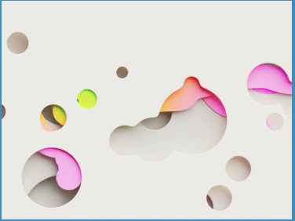
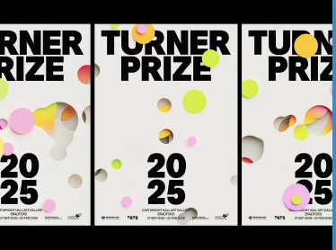
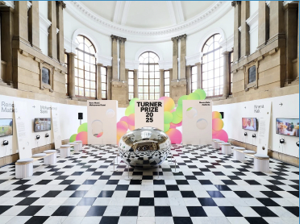
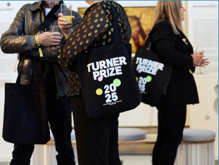
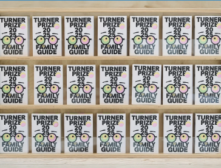
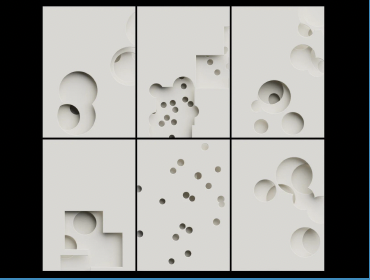
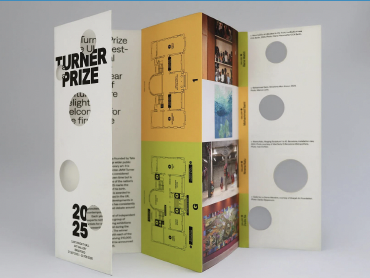
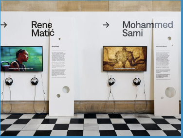
Turner Prize 2025 — один из самых престижных британских арт-проектов, в этом году проходящий в Брадфорде. Визуальную идентичность разработала студия Rabbithole, опираясь на идею «fragmented beauty» — фрагментированной красоты. Органические формы, вырезанные из плоскости, создают систему, где каждый носитель — от постера до тотбэга — живёт по одним правилам, но всегда уникален.
Острое/мягкое, угловатое/округлое — пластика формы задаёт характер
05
Проверь системность
Можно ли из этих элементов собрать визитку, сайт, упаковку, билборд?
Чек-лист качества
✓ Идея сформулирована словами ДО сбора визуалов
✓ Тип мудборда = формообразующий (для айдентики)
✓ Есть композиционный центр (1–2 «героя»)
✓ Все элементы «говорят» на одном визуальном языке
✓ 8–12 кадров (не перегружен)
✓ Каждый визуал аргументирован (не «просто красиво»)
✓ Масштабируется — работает от визитки до билборда
✓ Считывается без подробных объяснений
Антипаттерны: «Галерея Pinterest» без структуры · все картинки одного размера (нет акцентов) · начинать с картинок, а не с идеи · смешивать типы без осознания · «Красиво, но про что?»
[ ● ● ● ]
Как поставить задачу дизайнеру
Взгляд от дизайнера: начните не с брифа
Первый пункт — не бриф, не ТЗ, не мудборд.
Первый пункт — определиться с долей вашего вкуса и стиля в айдентике.
Определите границы
Где заканчивается ваше видение и начинается творчество исполнителя?
Что принципиально: цвет, шрифт, настроение, стиль?
Где готовы довериться?
Без этого → «Мне не нравится» → «А что нравится?» → цикл повторяется.
Порядок постановки
01
Границы
Что принципиально, а что отдаёте дизайнеру
02
Референсы с аргументацией
Не «мне нравится», а «берём, потому что...»
03
Формообразующий мудборд
Визуальный алфавит будущего бренда
04
Бриф
Стратегия + идея + референсы + границы
05
Пространство
Дайте дизайнеру свободу внутри границ
Чем чётче ваш референс, чем чётче ваши границы — тем более управляемый результат.
[ ● ● ● ]
Резюме: весь путь от нуля до бренда
6 этапов, которые реально пройти за 2–3 недели с AI
Этап 1
Ресёрч и стратегия
Собираем массив информации. Фокусируемся на главном. Собираем пирамиду бренда.
Этап 2
Креативные механики
Разгоняем голову. AI ведёт по креативной механике, появляются новые идеи.
Этап 3
Компрессия до сути
Одна идея → один абзац → одно предложение → одно слово. Получаем нейминг.
Этап 4
Визуальное расширение
Ищем референсы, ходим по визуальным системам.
Этап 5
Референсная база
Собираем мудборд — как должен выглядеть бренд.
Этап 6
Бриф дизайнеру
Вся информация → бриф арт-директору → визуальная система.
Вы строите свои медиа: сайты, приложения, контент. Привлекаете клиентов из нескольких каналов, не из одного маркетплейса. Управляете рекламой и конверсиями.
Бренд — это не расходы. Это контроль над своим бизнесом.
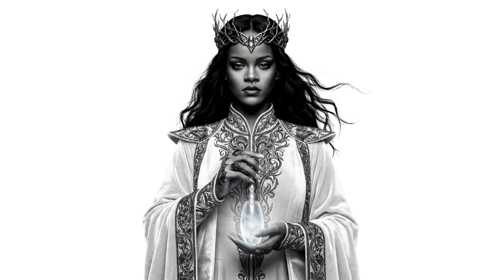
Ресурсы: где искать референсы
Полный список платформ для визуального ресёрча — от айдентики до атмосферы